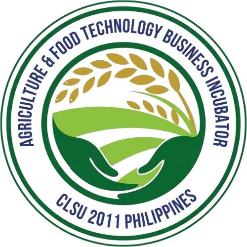

DOST-PCAARRD-CLSU Agriculture & Food TBI
Central Luzon State University · Region III
The DOST-PCAARRD-CLSU Agriculture & Food TBI (AFTBI) is hosted by Central Luzon State University in the Science City of Muñoz, Nueva Ecija and serves Region III (Central Luzon). Funded by the Philippine Council for Agriculture, Aquatic and Natural Resources Research and Development (PCAARRD-DOST), CLSU AFTBI is designed to facilitate the transfer and commercialization of mature technologies developed by CLSU researchers, helping MSMEs grow and access larger markets locally and globally.
- Category
- Technology Business Incubator
- Host institution
- Central Luzon State University
- City
- Science City of Muñoz, Nueva Ecija
- Region
- Region III
- Operating status
- Operating
About the Center
CLSU AFTBI provides comprehensive support for food and agriculture-based MSMEs — from technology adoption and product development through to market access and regulatory compliance. The center is equipped with an extensive range of food processing lines including meat processing, drying, juice, freezing, smoking, and bakery facilities, as well as laboratory services and cold storage, making it one of the most fully equipped agri-food incubation facilities in Central Luzon.
The center has hosted the 3rd National TBI Conference & Incubatee Summit and has brokered partnerships with Washington State University (WSU) and the Philippine Food and Drug Administration (FDA). With 15 agri-based technologies from Central Luzon currently open for commercialization, CLSU AFTBI is an active conduit between university research and market-ready enterprise for the region's agricultural sector.
Programs & Services
- Technology Transfer & Commercialization — Facilitation of technology licensing and commercialization for CLSU-developed agri and food processing innovations, supporting MSMEs in adopting proven technologies
- Food Processing Incubation Facilities — Access to fully equipped processing lines including meat processing, drying, juice processing, freezing, smoking, bakery operations, cold storage, and food safety laboratory services
- Training & Mentorship for MSMEs — Structured training on food processing technologies, product quality improvement, HACCP, FDA registration, labeling compliance, and production scale-up
- Product Development & Improvement — Technical guidance and R&D support to help incubatees refine formulations, improve shelf life, develop packaging, and differentiate products for competitive markets
- Business Counseling & Market Access — Advisory support for business planning, market research, brand development, and distribution channel access — locally and for export markets
- RAISE Program & Consortium Support — Collaboration with regional consortium member institutions under PCAARRD's Regional Agri-Aqua Innovation System Enhancement (RAISE) Program
- IP & Regulatory Assistance — Guidance on intellectual property protection, FDA product registration, DTI/SEC business registration, and technology commercialization documentation
Contact
Sources & references
- clsu.edu.ph/business-affairs/clsu-aftbi
- punto.com.ph/clsu-offers-agri-food-tech-business-incubator-services-to-ente…
- clsu.edu.ph/news-and-updates/article/clsu-partners-with-wsu-fda-and-new-aft…
Details are drawn from public records and the sources above, July 2026.
Startupreneur Innovation Hub · synced from the Notion catalog (July 2026) · status: published.